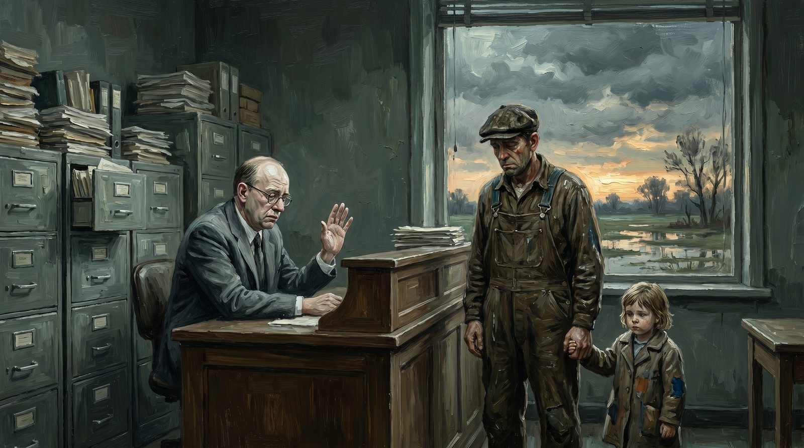

Der Versicherer gegen das Leben
Wie Risikovermeidung selbst zum größten Risiko wurde
Praxis · 14 Min. Lesezeit

Versicherung ist eine der schönsten Ideen, die Menschen je erdacht haben. Man wirft sein Risiko in einen gemeinsamen Topf. Jeder trägt ein wenig, damit niemand durch einen einzigen Schlag zermalmt wird. Das ist Solidarität in ihrer konkretesten Form — kein Sentiment, kein moralisches Loblied, sondern ein Mechanismus, der funktioniert. Der Bauer, dessen Scheune abbrennt, verliert nicht alles. Der Fischer, dessen Boot sinkt, kann wieder fahren. Die Familie, deren Ernährer stirbt, hat ein Einkommen.
Diese Idee ist so gut, dass sie funktioniert hat, solange Menschen Gemeinschaften bilden. Gilden hatten gegenseitige Unterstützungsfonds. Seefahrende Städte hatten Schiffsversicherungen bereits im Mittelalter. Bauerngenossenschaften teilten Hagelschäden. Die Idee ist universell und uralt: gemeinsam tragen, was man allein nicht tragen kann.
Was aus dieser Idee geworden ist, ist ihr Gegenteil. Der moderne Versicherer ist eine Organisation, die jedes Risiko wegzuschreiben, wegzuvertraglich regeln, wegzudefinieren versucht — um so wenig wie möglich auszahlen zu müssen. Und das Ergebnis ist, dass immer mehr Menschen für immer mehr Dinge unversicherbar geworden sind, während die Gesellschaft als Ganzes gegen die Risiken ungeschützt ist, auf die es wirklich ankommt.
Der ursprüngliche Gedanke
Wer die Geschichte der Versicherung studiert, sieht ein Modell, das auf drei Prinzipien beruht.
Das erste ist Gegenseitigkeit. Du trägst bei, wenn ein anderer es braucht, in der Erwartung, dass ein anderer beiträgt, wenn du es brauchst. Das ist keine Transaktion — es ist eine Beziehung. Du weißt nicht, ob du den Topf jemals in Anspruch nehmen wirst. Aber du weißt, dass der Topf da ist, wenn du ihn brauchst.
Das zweite ist Gemeinschaft. Der Topf funktioniert, weil die Teilnehmer etwas Gemeinsames haben. Sie kennen gegenseitig ihre Risiken, sie verstehen die Situation des anderen, sie vertrauen darauf, dass niemand die Regelung missbraucht. Die frühen Versicherungsgemeinschaften waren buchstäblich Gemeinschaften — Gilden, Dörfer, Berufsgruppen. Dieses Vertrauen war die Grundlage, auf der alles ruhte.
Der Topf funktioniert, weil die Teilnehmer etwas Gemeinsames haben.
Das dritte ist Solidarität durch Urteil. Diejenigen, die den Topf verwalteten, kannten die Situation. Sie konnten beurteilen, ob jemand in gutem Glauben gehandelt hatte, ob ein Schaden legitim war, ob jemand rücksichtsloser war, als die Gruppe tragen konnte. Dieses Urteil war menschlich, persönlich, manchmal unvollkommen. Aber es war in der Wirklichkeit verankert.
Alle drei Prinzipien sind in der modernen Versicherungsbranche nahezu vollständig verschwunden.
Wie versicherungsmathematische Modelle das Urgefühl wegmodelliert haben
Der Aktuar ist der Mathematiker der Versicherungsbranche. Er berechnet auf der Grundlage historischer Daten, wie groß die Wahrscheinlichkeit eines bestimmten Risikos ist, und was die Kosten sind, wenn dieses Risiko sich realisiert. Auf der Basis dieser Berechnung wird die Prämie festgelegt.
Das ist an sich eine nützliche Technik. Aber es ist eine Technik, die an Durchschnittswerten und Gruppen arbeitet — und die schlechterdings nicht in der Lage ist, das Individuum zu beurteilen.
Der Aktuar weiß, dass zwei Prozent der Häuser in einer bestimmten Kategorie jedes Jahr Schäden haben. Er weiß nicht, welche zwei Prozent. Er verteilt die Kosten also auf die gesamte Gruppe. Das ist der Kern des Versicherungsprinzips — soweit korrekt.
Aber der nächste Schritt ist, wo es schiefgeht. Denn der Aktuar will die Gruppen immer weiter verfeinern. Er will die Gruppe in Untergruppen aufteilen, die jeweils ein genaueres Risikoprofil haben. Häuser in hochwassergefährdeten Gebieten separat. Häuser von Eigentümern über siebzig separat. Häuser mit Flachdächern separat. Und so weiter. Mit jeder Aufteilung wird die Prämie genauer — und mit jeder Aufteilung wird eine größere Gruppe von Menschen unversicherbar oder zu unerschwinglichen Bedingungen versichert.
Das Paradox ist glaskar: Je genauer der Aktuar sein Risiko berechnen kann, desto weniger ähnelt es noch einer Versicherung. Wenn man genau weiß, dass jemand Schaden erleiden wird, ist es keine Versicherung mehr — es ist ein Zahlungsplan für sichere Kosten. Versicherung braucht Ungewissheit, um existieren zu können. Indem man die Ungewissheit wegmodelliert, untergräbt die Branche ihre eigene Daseinsberechtigung.
Aber das hält sie nicht auf. Denn genauere Segmentierung bedeutet höhere Prämien für die Hochrisikogruppen und niedrigere für die Niedrigrisikogruppen. Und die Niedrigrisikogruppen — die Reichen, die Gesunden, die in guten Gegenden Wohnenden — sind auch die Menschen mit Alternativen. Will man diese Kunden halten, muss man ihre Prämie niedrig halten. Also werden die Hochrisikogruppen wegsegmentiert.
Die Klimaversicherung, die gekündigt wird
Es gibt kaum eine schärfere Illustration dieses Problems als das, was gerade mit Klimarisiken geschieht.
Überschwemmungen, Waldbrände, extreme Hitze, Stürme — die Wahrscheinlichkeit nimmt in großen Teilen der Welt zu. Genau die Gebiete, in denen dieses Risiko am stärksten wächst, sind auch die Gebiete, aus denen sich Versicherer zurückziehen. In Kalifornien haben große Versicherer ihre Policen in brandgefährdeten Gebieten gekündigt. In Teilen Floridas ist Überschwemmungsversicherung nahezu unerschwinglich geworden. In den Niederlanden wächst das Bewusstsein, dass klimabezogene Wasserschäden zunehmend nicht in der Standardpolice enthalten sind.
Das ist rational aus Sicht des Versicherers. Das Risiko ist gestiegen, die Prämie könnte mitsteigen, aber ab einem bestimmten Niveau verliert man Kunden. Und wenn man die Prämie nicht mitsteigen lassen kann — zum Beispiel durch politischen Druck oder Konkurrenz — dann verlässt man den Markt.
Aber es ist moralischer Wahnsinn. Die Versicherung wird genau dort gekündigt, wo sie am dringendsten gebraucht wird. Menschen, die seit Jahrzehnten treu Prämie gezahlt haben, erhalten einen Brief, dass ihre Police nicht verlängert wird. Sie haben keine Alternative. Sie können ihr Haus nicht einfach versetzen. Sie sitzen fest mit einem unversicherten Risiko, das sie selbst nicht tragen können.
Die Gesellschaft als Ganzes übernimmt das Risiko dann — über Notfonds, Katastrophengesetzgebung, staatliche Beihilfen. Aber das ist kollektive Solidarität ohne die Effizienz des Versicherungsmarkts. Es ist das Schlechteste aus beiden Welten: der Markt zieht sich zurück, und der Staat springt ein, ohne die Schärfe eines versicherungsmathematischen Systems.
Wie der Versicherer das Unternehmertum blockiert
Das ist der am wenigsten diskutierte Teil, der aber für Unternehmer den direktesten Einfluss hat.
Keine Versicherung bedeutet keinen Kredit. Das ist eine einfache Kette, die in der Praxis alles bestimmt. Die Bank will die Gewissheit, dass Aktiva versichert sind, bevor sie eine Hypothek oder einen Unternehmenskredit vergibt. Der Vermieter eines Gewerberaums möchte eine Haftpflichtversicherung sehen. Manche Auftraggeber verlangen eine Berufshaftpflichtversicherung als Voraussetzung für die Vergabe. Große Einkäufer fragen nach einem Nachweis der Produkthaftpflicht.
Für denjenigen, der in einer bestehenden, bekannten Aktivität tätig ist, ist all das regelbar. Der Versicherer kennt das Risikoprofil, die Prämie ist erschwinglich, es ist Papierkram.
Für denjenigen, der etwas Neues tut, ist das System blockiert. Ein Unternehmer, der ein neues Technologieprodukt herstellt, sucht Produkthaftpflichtversicherung. Der Versicherer hat keine historischen Daten für diesen Produkttyp. Er kann das Risiko nicht modellieren. Er lehnt ab oder verlangt eine Prämie, die wirtschaftlich nicht tragbar ist.
Ein Freiberufler, der eine neue Art von Dienstleistung anbietet, sucht Berufshaftpflicht. Seine Tätigkeit passt in keine Standardkategorie. Er wird zwischen Versicherern hin- und hergeschickt, die ihn alle nicht haben wollen.
Ein Freiberufler, der eine neue Art von Dienstleistung anbietet, sucht Berufshaftpflicht.
Eine neue Branche, eine neue Technologie, eine neue Dienstleistungsform — überall dasselbe Muster. Das Unbekannte passt nicht ins Modell. Das Modell verweigert. Der Unternehmer erstickt.
Und so schließt sich der Kreis aus Ausgabe 4, Artikel 1 und diesem Artikel: Die Bank will kein Darlehen an den vergeben, der keine Versicherung hat. Der Versicherer will keine Police an den vergeben, der keine bewiesene Erfolgsbilanz hat. Wer etwas Neues beginnt, hat weder das eine noch das andere. Er kann nicht anfangen.
Das ist kein Zufall. Das sind zwei Systeme, die jeweils aus ihrer eigenen Logik heraus genau denselben Blockadepunkt produzieren. Zusammen bilden sie eine Mauer um das Bestehende, die das Neue draußen hält.
Das Menschengehirn, das alles totschreibt
Ein Versicherungsvertrag ist ein Dokument, das geschrieben wurde, um den Versicherer zu schützen, nicht den Versicherten.
Ich behaupte das nicht aus Zynismus. Ich behaupte es als Beschreibung dessen, was man sieht, wenn man eine Police wirklich liest. Der Kern einer Versicherungspolice — was versichert ist, wann, unter welchen Umständen — steht in relativ wenigen Worten. Der Rest des Dokuments besteht aus Ausschlüssen, Bedingungen, Definitionen, Vorbehalten, Prozeduren und Klauseln, die die Fälle einschränken, in denen gezahlt werden muss.
Das ist die Menschengehirn-Schicht, die über den ursprünglichen Gedanken der Gegenseitigkeit aufgebaut wurde. Dieser ursprüngliche Gedanke war simpel: Wenn dir das passiert, helfen wir. Was jetzt dasteht: Wenn dir das passiert, helfen wir, es sei denn, es liegt Definition A vor, oder Situation B, oder Umstand C, oder Handlung D, oder Versäumnis E, oder höhere Gewalt F, oder Ausschluss G durch Artikel H in Anlage I, sofern du nicht fristgerecht Meldung gemacht hast mit Formular J innerhalb von Frist K.
Der Versicherte, der einen Schaden hat, muss beweisen, dass er Anspruch auf Zahlung hat. Nicht der Versicherer, der beweisen muss, dass er nicht zahlen muss — der Versicherte, der nachweisen muss, dass er in die richtige Kategorie fällt. Und die Kategorien sind so geschrieben, dass ein beträchtlicher Teil echter Schäden nicht darunter fällt.
Das ist nicht zufällig. Das ist System. Und das System hat einen Namen: die Schadensabteilung. Diese Abteilung wurde nicht aufgebaut, um Schäden zu ersetzen. Diese Abteilung wurde aufgebaut, um Schäden zu beurteilen, was in der Praxis bedeutet: nach Gründen zu filtern, nicht zu zahlen.
Ich kenne Menschen, die nach zwanzig Jahren treuer Prämienzahlung feststellten, dass ihr Schaden nicht unter die Policeformulierung fiel, aus Gründen, die erst beim Schaden selbst deutlich wurden. Das ist kein Missverständnis. Das ist eine Konstruktion.
Die moralische Leere
Die ursprüngliche Versicherung ruhte auf einer moralischen Grundlage. Man sorgte für andere in der Gemeinschaft, weil man wusste, dass sie für einen selbst sorgen würden. Das war nicht nur Gegenseitigkeit als Transaktion — es war ein Vertrauen darin, dass die Gemeinschaft für einen einsteht.
Dieses Vertrauen ist der Kern dessen, was Versicherung ist. Ohne dieses Vertrauen ist es keine Versicherung — es ist ein Finanzprodukt mit einem Versicherungsetikett.
Was ist von diesem Vertrauen geblieben? Wer seine Police gelesen hat, besonders bei großen Schäden, und die Abwicklung miterlebt hat, kann diese Frage selbst beantworten. Und wer nicht persönlich mit großem Schaden zu tun hatte, kennt jemand anderen, der es hat. Die Geschichten sind konsistent und handeln von demselben: Du zahlst jahrelang, du erwartest Unterstützung, wenn es drauf ankommt, du bekommst ein Verfahren.
Das ist nicht nur unangenehm. Es hat gesellschaftliche Folgen. Wenn Menschen aufhören zu vertrauen, dass der Versicherer hinter ihnen steht, verändern sie ihr Verhalten. Sie gehen weniger Risiken ein — denn wenn es schiefgeht, ist man sowieso auf sich selbst angewiesen. Sie suchen Sicherheit im Bestehenden — denn das Neue bringt unversicherbare Risiken. Sie verhandeln weniger, bauen weniger auf, versuchen weniger.
Der Versicherer, der seine eigene Solidaritätsfunktion ausgehöhlt hat, hat auch die Bereitschaft ausgehöhlt, Risiken einzugehen, die der Kern jeder dynamischen Gesellschaft ist. Wenn niemand mehr abdeckt, geht niemand mehr Risiken ein. Wenn niemand mehr Risiken eingeht, erneuert niemand mehr. Die Gesellschaft als Ganzes wird risikoavers — und damit fragil gegenüber den echten Risiken, auf die sie sich nicht vorzubereiten gewagt hat.
Drei Hirnschichten in der Versicherungsentscheidung
Auf Urgefühl-Ebene würde ein Versicherer fühlen: Ist dieses Risiko real und ehrlich? Ist dieser Mensch in gutem Glauben? Ist das die Situation, für die wir gedacht sind? Diese Schicht ist verschwunden. Das Urteil über ein Individuum wurde ersetzt durch das Einordnen eines Individuums in eine Risikokategorie. Der Mensch verschwindet hinter seinem Profil.
Auf Säugetiergehirn-Ebene gäbe es eine Beziehung. Der Versicherer würde den Versicherten kennen, seine Situation verstehen, seinen Schaden im Kontext beurteilen. Diese Schicht existiert nominell beim Schadenbearbeiter, aber dieser Schadenbearbeiter hat keine Befugnis mehr. Er befolgt ein Protokoll. Das Protokoll ist Gesetz.
Auf Menschengehirn-Ebene stehen die Policebedingungen, die Ausschlusslisten, die Rechtsprechung, die Schadensverfahren, die Revisionskommissionen, der Ombudsmann, das Beschwerdeninstitut. Das ist das einzige Niveau, das noch funktioniert. Und dieses Niveau ist nicht darauf ausgerichtet zu helfen — es ist darauf ausgerichtet, Rechenschaft für die Entscheidung ablegen zu können, nicht zu helfen.
Das ist das einzige Niveau, das noch funktioniert.
Ein gesundes Versicherungssystem würde auf allen drei Schichten arbeiten. Es würde Menschen beurteilen, nicht nur Profile. Es würde Beziehungen pflegen, nicht nur Policen. Es würde Prozeduren als Auffangnetz haben, nicht als erste Linie.
Was wir haben, ist eine Schicht — die oberste —, die für das gesamte System sorgen muss. Und das kann sie nicht.
Was anders sein sollte
Die Versicherungsgemeinschaft in ihrer ursprünglichen Form — die Gegenseitigkeitsgesellschaft, die Genossenschaft, das Gilde — war kleinmaßstäbig und persönlich. Das war kein Mangel. Das war die Quelle ihrer Stärke. Die Mitglieder kannten sich. Sie konnten beurteilen, wer in gutem Glauben war. Sie konnten solidarisch sein, weil die Solidarität sichtbar und wechselseitig war.
Gegenseitige Versicherungen bestehen noch immer in einigen Sektoren — besonders in der Landwirtschaft gibt es genossenschaftliche Versicherungsformen, die sich deutlich vom Großmarkt unterscheiden. Sie sind nicht perfekt. Aber sie sind näher am ursprünglichen Gedanken.
Das Problem ist der Maßstab. Die moderne Wirtschaft braucht Versicherungen, die nicht in eine einzige Gemeinschaft passen. Internationaler Handel, große Investitionen, komplexe Technologie — die Risiken sind zu groß und zu diffus für einen lokalen Topf. Und so ist die Branche notgedrungen großmaßstäbig geworden. Aber Großmaßstäblichkeit muss nicht bedeuten: menschenlos.
Es gibt Versicherer, die das verstehen und praktisch damit umgehen. Die ihren Schadenbearbeitern Raum geben, zu urteilen. Die ihre Zeichnungsverfahren auf Dialog statt auf Formulare ausrichten. Die Prämiendifferenzierung mit echten Beziehungen verbinden. Sie sind klein, relativ unbekannt, und sie ringen darum, in einem Markt zu wachsen, der über den Preis konkurriert.
Aber sie existieren. Und sie beweisen, dass es anders geht. Nicht perfekt — aber menschlicher.
Die Gesellschaft, die ihren eigenen Risikoträger verloren hat
Die Frage, die niemand stellt, die aber jeder stellen sollte: Wer trägt jetzt das Risiko?
Wenn sich der Versicherer aus dem Klimarisiko zurückzieht, springt der Staat ein. Wenn der Versicherer den kleinen Unternehmer nicht versichern kann, trägt dieser Unternehmer das Risiko selbst. Wenn der Versicherer bei Schaden nicht zahlt, trägt das Individuum die Last allein.
Der kollektive Risikoträger ist weggefallen. Was an seine Stelle getreten ist, ist eine Kombination aus staatlichen Garantien für die großen Risiken und individueller Verwundbarkeit für den Rest. Das ist kein Fortschritt gegenüber der Gildekasse des sechzehnten Jahrhunderts. Das ist Rückschritt — mit besseren Tabellenkalkulationen.
Und das Gefährlichste von allem ist, dass niemand das so benennt. Die Versicherungsbranche berichtet Kundenzufriedenheit, Prämienwachstum, Policenzahlen. Sie berichtet nicht darüber, was sie nicht mehr abdeckt. Sie berichtet nicht über die Menschen, die unversicherbar geworden sind. Sie berichtet nicht über die Unternehmer, die nicht angefangen haben, weil sie keine Deckung finden konnten.
Diese abwesenden Ergebnisse existieren nicht als Kategorie. Sie haben keine Spalte im Jahresbericht. Und was keine Spalte hat, muss nicht verantwortet werden.
So hält sich ein System selbst aufrecht, auch wenn es seine ursprüngliche Funktion längst verlassen hat.
Dies ist Ausgabe 4, Artikel 5. Er baut auf Ausgabe 3, Artikel 9 (Das Urgefühl in der Berufspraxis), Ausgabe 4, Artikel 1 (Das Gesetz der Papier-Industrie) und Ausgabe 4, Artikel 4 (Das verlorene Urgefühl der Banken) auf. Die Serie wird auf openvizier.org fortgesetzt.
Der Versicherer gegen das Leben
Versicherung ist eine der schönsten Ideen, die Menschen je erdacht haben. Was aus dieser Idee geworden ist, ist ihr Gegenteil.
"Je genauer der Aktuar sein Risiko berechnen kann, desto weniger ähnelt es noch einer Versicherung. Versicherung braucht Ungewissheit, um existieren zu können."
Wie versicherungsmathematische Modelle das Urgefühl wegmodelliert haben
Der ursprüngliche Gedanke: Man wirft sein Risiko in einen gemeinsamen Topf. Jeder trägt ein wenig, damit niemand durch einen einzigen Schlag zermalmt wird. Solidarität in ihrer konkretesten Form — kein Sentiment, sondern ein Mechanismus, der funktioniert.
Der Aktuar will die Gruppen immer weiter verfeinern, immer genauere Risikoprofile erzeugen. Mit jeder Aufteilung wird die Prämie genauer — und mit jeder Aufteilung wird eine größere Gruppe unversicherbar. Die Niedrigrisikogruppen — die Reichen, die Gesunden, die in guten Gegenden Wohnenden — werden mit niedrigen Prämien gehalten. Die Hochrisikogruppen werden wegsegmentiert. Und die Versicherung verlässt genau die Menschen, für die sie gedacht war.
Die Klimaversicherung, die gekündigt wird
In Kalifornien haben große Versicherer ihre Policen in brandgefährdeten Gebieten gekündigt. In Teilen Floridas ist Überschwemmungsversicherung nahezu unerschwinglich. In den Niederlanden wächst das Bewusstsein, dass klimabezogene Wasserschäden zunehmend nicht in der Standardpolice enthalten sind.
Die Versicherung wird genau dort gekündigt, wo sie am dringendsten gebraucht wird. Menschen, die seit Jahrzehnten treu Prämie gezahlt haben, erhalten einen Brief, dass ihre Police nicht verlängert wird. Sie haben keine Alternative. Die Gesellschaft übernimmt das Risiko dann — über Notfonds, staatliche Beihilfen. Das Schlechteste aus beiden Welten: Der Markt zieht sich zurück, der Staat springt ein — ohne die Effizienz des Versicherungssystems.
Wie der Versicherer das Unternehmertum blockiert
Keine Versicherung bedeutet keinen Kredit. Ein Unternehmer, der ein neues Technologieprodukt herstellt, sucht Produkthaftpflichtversicherung. Der Versicherer hat keine historischen Daten für diesen Produkttyp. Er kann das Risiko nicht modellieren. Er lehnt ab.
So schließt sich der Kreis: Die Bank will kein Darlehen an den vergeben, der keine Versicherung hat. Der Versicherer will keine Police an den vergeben, der keine bewiesene Erfolgsbilanz hat. Wer etwas Neues beginnt, hat weder das eine noch das andere. Zwei Systeme, die aus ihrer eigenen Logik heraus denselben Blockadepunkt produzieren. Zusammen bilden sie eine Mauer um das Bestehende.
"Der Versicherer, der seine eigene Solidaritätsfunktion ausgehöhlt hat, hat auch die Bereitschaft ausgehöhlt, Risiken einzugehen — der Kern jeder dynamischen Gesellschaft."